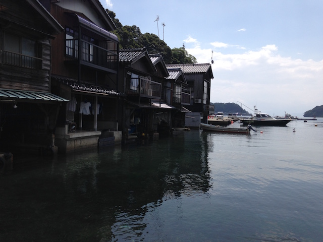

The Tango-Hanto(Peninsula) is located in the north of Kyoto Prefecture, thrusting northeast into the Sea of Japan. Today it is a very quiet place, but in the past, it is said to have been very prosperous thanks to active trade exchanges with the continent of Asia.
Ine-cho (Ine Village) gives us some hints about how the people lived their life in the past.
Ine-no-Funaya Houses
The houses are built close to the sea surface of the Ine-wan bay. They are designed for people to have direct access to the sea from their houses. The first floor, it is a garage for a boat !
Marine people were actively sailing for trading in the past, in the 1st or 2nd century, or even before Christ.

There are some restaurants serving fresh seafood at Ine-cho. The one we visited is Heishiro.
Kaisen-Don (seafood bowl) we ate!
Another restaurant I recommend is Restaurant Funaya. This restaurant has a beautiful view over the sea.
Urashima-jinnja (shrine)
The Tango Peninsula has many legends and mysteries, among them the most famous one is the story of Urashima Taro.
A long long time ago, a young fisherman named Urashima Taro was fishing when he found some children torturing a small turtle on the beach. Taro saved the turtle, and the turtle told him it would take him to Ryugu-Jo (Palace of the Dragon God) under the sea. There Taro met a beautiful princess, Otohime, and had a great time.
After spending three days at the palace, he wanted to go back to his village and see his parents and friends. When he told Otohime that he would leave for his village, she was very sad, but wished him well and gave him a mysterious box called tamatebako. She explained to him that the box would protect him from harm but that he should never open it. Taro grabbed the box and left the palace.
When he got home, everything had changed… His parents, his friends were nowhere. He asked people if they knew a man named Urashima Taro, they said that they heard the name and that the man disappeared into the sea 300 years ago! He finally realized that he had spent a lot of time at the Ryugu Palace.
He was so shocked and desperate. Without thinking, he opened the box the princess gave him… and then white smoke appeared from inside. He suddenly became old. His beard and hair turned white, and his back bent…
Usually the story ends here, but some people say the story continues.
After getting aged, Taro became a crane and flew away. He was given eternal life and could see Otohime again.
We are not sure what the real story is like… Maybe true or maybe not… This is why it is mysterious.
There must be a message in the story…
What happened here in the past?
Urashimako (the real name of Urashima Taro?) is enshrined at Urashima Shrine situated in the north of Ine Village.

Landscape of the Tango Peninsula
If you have a car, I really recommend going for a drive !!!
Terraced rice fields facing the sea of Japan.
Our old old ancestors were sailing here in boats…
And they may have been enjoying swimming and fishing, too.
Ine Tourism Association (English)
Ine Guide (Japanese)